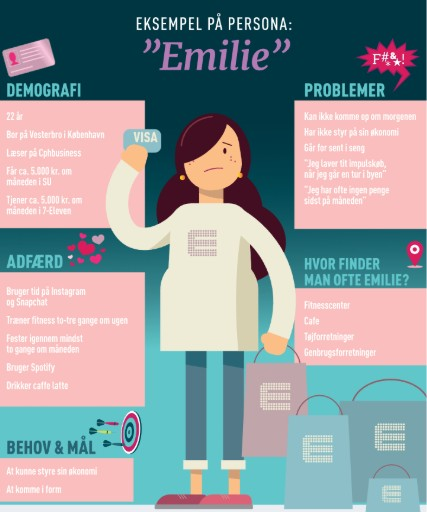

AIDA-modellen:
AIDA-modellen er en markedsføringsmodel med fire trin.

1. Attention (opmærksomhed)
I første trin Attention handler det om at fange forbrugerens opmærksomhed, det kan f.eks være gennem gode annoncer, som er målrettet til den rigtige målgruppe.
2. Interest (interesse)
I det andet trin Interest. Efter man har fanget kundens opmærksomhed, skal man prøve at få kunden til at blive interesseret i produktet. Man kunne fange interessen med at fortælle hvad produktet kan gøre, fordelene ved produktet.
3. Desire (ønske om at eje produktet)
I tredje trin har vi Desire, nu skal vi prøve at få kunden til at ønske at de ejede dette produkt, man kunne vise hvordan produktet kunne opfylde ens behov eller løse et problem.
4. Action (handling - købe produktet)
Den fjerde som også er den sidste trin er Action, her skal vi prøve at få kunden til at købe produktet, man kunne måske sige der var begrænset antal, eller et godt rabat, eller nemt at købe produktet, i de her … butikker.
3-30-3-modellen
Fange opmærksomhed på 3 sekunder, skabe interesse på 30 sekunder, og levere budskabet på 3 minutter.
Personaer:
Ens målgruppe med oplysninger som demografi, adfærd, problemer, hvor man finder personen/målgruppen, behov og mål.

Richard Raskins 5 parametre:
1. Fortællingens kvalitet vs. reklamens formål
* En reklame skal have en spændende og sammenhængende historie, men samtidig fastholde sit budskab og formål.
* Hvis balancen ikke er der, kan seeren huske historien, men glemme produktet, eller omvendt kan historien virke uinteressant.
2. Ord vs. handling
* Reklamen bør lade handlingen formidle budskabet så meget som muligt og undgå for lange tekstpassager (som voice-over eller undertekster).
* For mange ord kan gøre reklamen kedelig eller mere som en radioreklame med billeder.
3. Modsætninger vs. proces
* Strukturer i reklamen kan styrkes gennem fastlåste modsætninger eller karakterer i opposition.
* Processen med ændringer, vendepunkter og overraskelser giver liv og fremdrift i fortællingen.
* Hvis denne balance mangler, kan historien føles enten statisk eller meningsløs.
4. Klarhed vs. undertekst
* Seeren skal altid forstå, hvad der sker, men samtidig efterlades narrative huller, så de selv kan skabe mening.
* En ubalance kan føre til enten en uforståelig historie eller en fortælling, der føles forceret og belærende.
5. Vende eller afmontere modstand vs. ikke at provokere/frastøde
* Reklamen skal bruge fortælleteknik og overtalelse til at nå målgruppen uden at møde modstand.
* Samtidig skal reklamen passe på ikke at støde eller frastøde seeren.
* Hvis dette ikke fungerer, kan reklamen enten blive ignoreret eller virke stødende for målgruppen.
Disse fem parametre hjælper med at skabe en velafbalanceret reklame, der engagerer seeren, bevarer budskabet og rammer målgruppen effektivt.